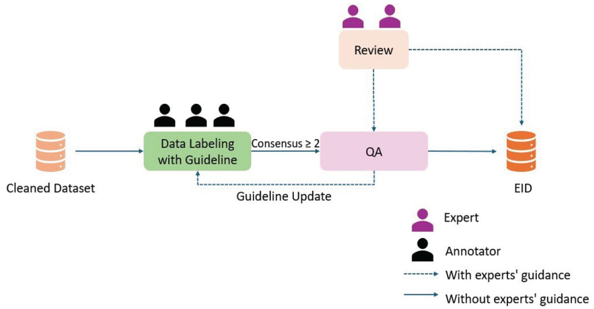

EID — Earthquake Image Dataset
Earthquake Spectra, 2025
The Earthquake Image Dataset (EID) is a large-scale collection of ground-level, social-media photos labeled for earthquake damage, along with methods that make crowd-sourced imagery genuinely useful for rapid disaster response.